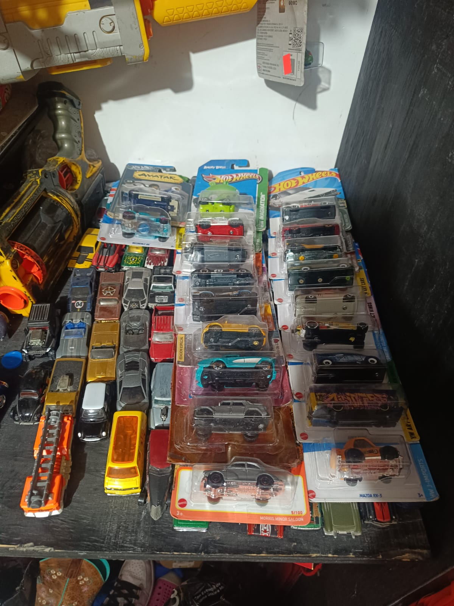

- Hot Wheels básicos
- Los modelos estándar que encuentras en cualquier tienda.
- - Empaque sencillo con el logo clásico,Numeración en la parte superior derecha del blister,Producción masiva, por lo que no suelen tener detalles exclusivos.
- Hot Wheels de edición limitada
- - Lanzados en cantidades reducidas, muy buscados por coleccionistas y se identifican principalmente por Empaque especial con logotipos de aniversario o eventos, Colores o decoraciones únicas que no aparecen en la línea básica, A veces incluyen certificados o numeración limitada
- Hot Wheels Treasure Hunts (TH)
- Serie especial introducida en 1995, con decoraciones exclusivas se identifican de la siguiente manera
- Símbolo de una llama en el empaque o en el coche,Versiones “Super Treasure Hunt” tienen pintura Spectraflame y llantas de goma,Producción limitada, suelen ser más caros en reventa
- Hot Wheels Premium
- - Llantas de goma en lugar de plástico
- - Pintura más detallada y acabados realistas
- -Empaque más robusto, a veces con colecciones temáticas (películas, autos clásicos)
tipos de carritos y como identificarlos
